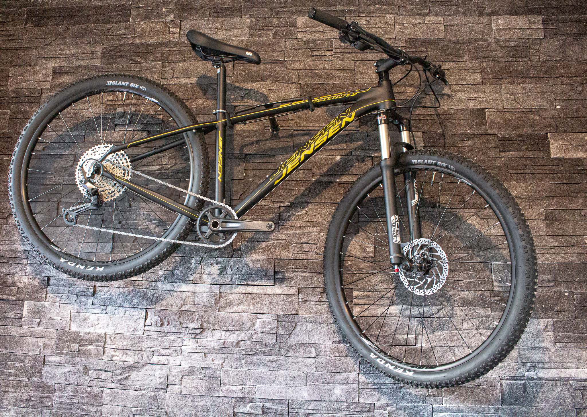

 Sadle Du sidder sjældent, det er derfor vigtigt at sadlen er indstillet helt korrekt. Der er mange faktorer der har indflydelse på hvordan du sidder bedst på din MTB. Der kan med fordel læses vores fulde artikel her.